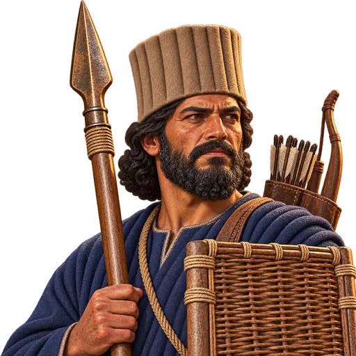
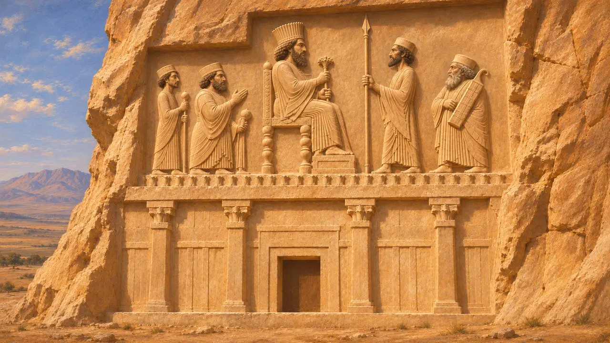
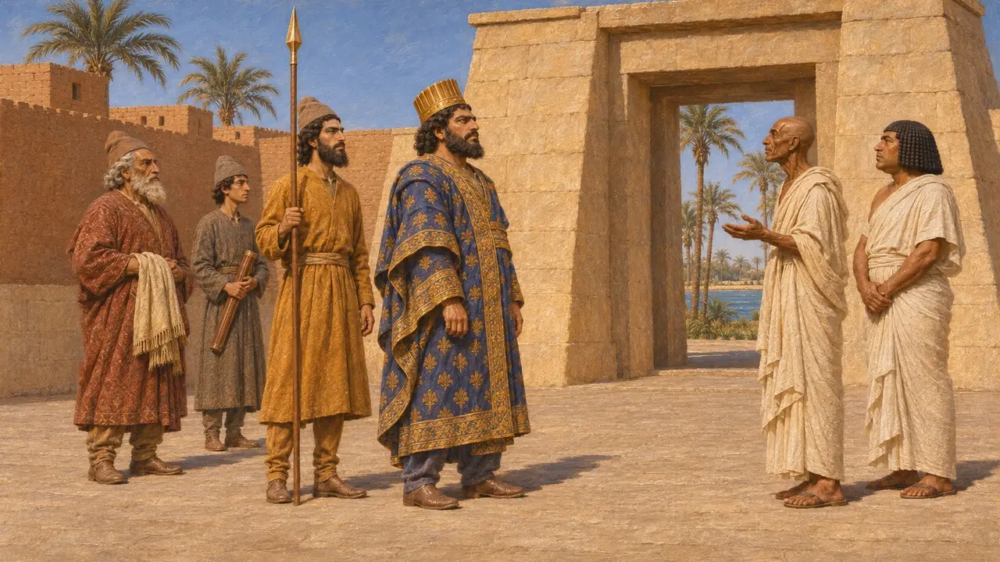
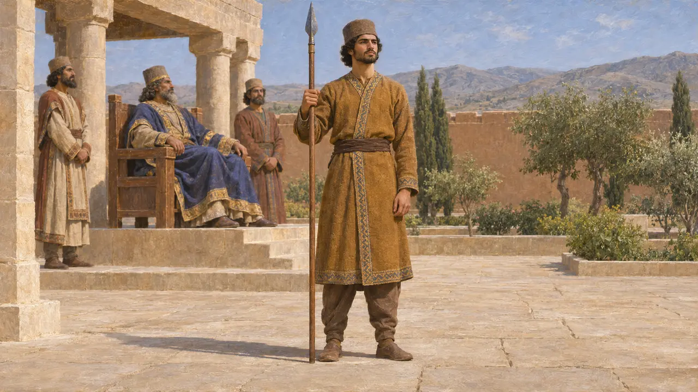
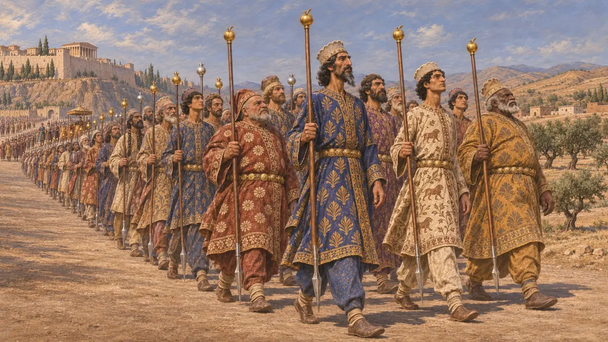
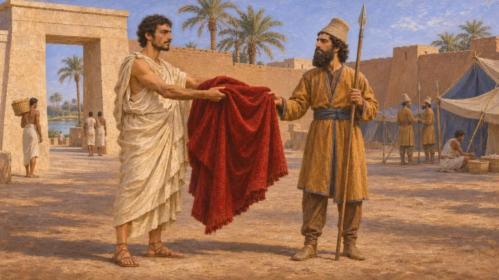

Der Lanzenträger des Königs
Hoftitel und Leibwachenamt der achämenidischen Könige, etwa 530-479 v. Chr.
Der Lanzenträger stand an der Seite des Königs und trug dessen Lanze, als Wache wie auch als Zeichen königlichen Vertrauens. Eine altpersische Beischrift am Grab des Dareios weist diesen Titel einem seiner engsten Adligen zu. Herodot berichtet, Dareios selbst habe Kambyses in Ägypten als Lanzenträger gedient, bevor er den Thron bestieg.
Im Spiel: Das Spiel vermerkt, dass Dareios der Lanzenträger des Kambyses war, und folgt damit Herodot 3.139. Das entspricht Herodot, doch unter Historikern ist umstritten, wie bedeutend oder bescheiden dieses Amt tatsächlich war.

Der in Naqsch-e Rostam gemeißelte Titel
Zeitgenössisch belegtAn der Fassade von Dareios' Grab in Naqsch-e Rostam bezeichnet eine kurze Beischrift (DNc) eine Figur als Gobryas, einen Patishuvarish, Lanzenträger (arshtibara) des Königs Dareios. Eine zweite Beischrift (DNd) nennt Aspathines als Träger des Bogenköchers oder der Streitaxt des Königs; der genaue Wortlaut ist unsicher. Gobryas war einer der sechs Adligen, die Dareios gegen Gaumata beistanden (DB §68); der Titel gehörte also einem Mann ersten Ranges.
DNc; DNd; DB §68

Dareios an der Seite des Kambyses in Ägypten
Antiker BerichtHerodot berichtet, dass Dareios, der Sohn des Hystaspes, während der Eroberung Ägyptens durch Kambyses dem König als einer seiner Lanzenträger folgte. Er fügt hinzu, dass Dareios damals noch kein Mann von großem Ansehen war. Damit gehörte der künftige König um 525 v. Chr. in Ägypten zum persönlichen Gefolge des Kambyses.
Herodotus 3.139

Einfacher Wächter oder hoher Amtsträger
UmstrittenDas griechische Wort, das Herodot gebraucht, doryphoros, konnte jedes Mitglied einer Leibwache bezeichnen. Manche Historiker verbinden es mit dem persischen Titel arshtibara und vertreten die Ansicht, Dareios habe bereits ein hohes Hofamt bekleidet. Andere halten ihn für einen einfachen Gardisten. Herodot betont, wie unbedeutend er war, während Dareios' eigene Inschrift von Behistun seine königliche Abstammung hervorhebt, und beide Bilder lassen sich nur schwer vereinen.
P. Briant, From Cyrus to Alexander, 2002

Die Speerträger der königlichen Garde
Antiker BerichtBei der Schilderung des Heereszuges des Xerxes aus Sardes im Jahr 480 v. Chr. berichtet Herodot, tausend Speerträger seien vor dem König hergeschritten, die Speerspitzen zum Boden gesenkt. Dicht hinter ihm folgten tausend Speerträger aus den edelsten Persern, die statt des Dorns am Schaftende goldene Äpfel an ihren Speeren trugen. Danach kam eine Schar von zehntausend auserlesenen Fußkämpfern: tausend mit goldenen Granatäpfeln an ihren Speeren und neuntausend mit silbernen.
Herodotus 7.40-41

Syloson und der rote Mantel
Spätere LegendeHerodot erzählt, wie Dareios, damals noch Lanzenträger in Ägypten, einen roten Mantel bewunderte, den Syloson von Samos trug. Er wollte ihn kaufen und bekam ihn geschenkt. Jahre später vergalt Dareios als König die Gabe, indem er Syloson als Herrscher über Samos einsetzen ließ. Die Geschichte ist als Lehre über Güte gegenüber einem Mann vor dessen Aufstieg gestaltet.
Herodotus 3.139-141
Quellen
- Herodotus 3.139-141
- DNc
- DNd
- Herodotus 7.40-41
- DB §68
- P. Briant, From Cyrus to Alexander, 2002